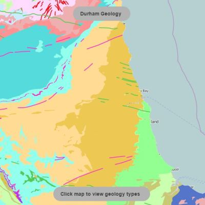

Portfolio. Technology, standards, code.
| |
||||
|---|---|---|---|---|
|  | |
WMS, GetFeatureInfo | Geospatial analysis, lookup tables | |
| |
WMS, GetFeatureInfo | Method | ||
| amet | . | |
WMS, GetFeatureInfo | |
| Integer | . | odio | Praesent | amet | . |
|
WMS, GetFeatureInfo | amet | . | WMS, GetFeatureInfo |